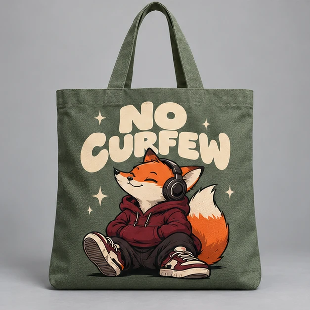

Pack a lighter tote for a campus day

Plan for the day you actually have
Check your timetable before packing. Bring the notebook, charger and materials needed for that day rather than carrying everything you own. A tote works well for a light load; for heavy equipment or long walks, choose a bag with support suitable for that load.
Give small items a home
Keep pens, keys and earphones in a small pouch so you do not need to empty the bag to find them. A reusable pouch you already own works fine. Keep keys away from screens and easily scratched items. Store important documents in a folder, especially when rain is possible.
Separate drinks and electronics
Use a properly closed bottle and keep it away from electronics. An ordinary fabric tote is not waterproof, and a fitted laptop cover does not protect against a drink spill. Check the bottle seal before leaving. If carrying a laptop, use suitable protective padding and avoid overloading the tote.
Check the straps and stitching
Look at where the handles join the bag before loading it. Follow any stated weight limit and stop using the bag if seams are pulling apart. Spread items so hard corners do not press into your body. Alternate carrying sides where comfortable, and reconsider the bag if your usual load causes discomfort.
Care for the graphic
Check the fabric and print-care instructions before washing. Empty the bag completely and remove loose dirt first. Do not assume a printed tote can be tumble-dried or ironed over its artwork. For a new design, confirm the final material, dimensions and print placement with the seller; concept artwork is not a specification.
Have a product question? Ask The NO CURFEW team on WhatsApp.